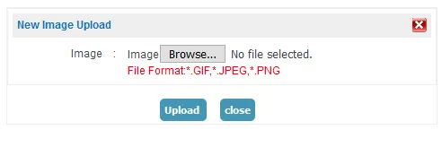
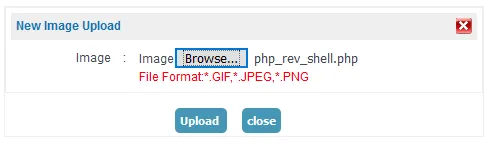

Obtain remote code execution through file upload feature.
Remote Code Execution
Remote code execution (RCE) refers to the ability of a cyber attacker to access and manipulate a computer or server without authorization, regardless of its geographic location. By exploiting RCE vulnerabilities, attackers can run arbitrary malicious software on the target system.
During my bug hunting endeavors, I discovered a target with a responsible disclosure program using Google Dorks. For the purpose of this blog post, let's refer to the target website as abc.com. One of the functionalities of this website allowed users to upload profile pictures. The developer had configured the application to only accept whitelisted extensions, such as *.gif, *.jpeg, and *.png.

Curious to test how the application handled file uploads for extensions other than the whitelisted ones, I attempted to upload a PHP file. However, the application prevented the upload due to client-side validation.

A few minutes later, I decided to modify the Content-Type header in an attempt to bypass the client-side validation. I changed the Content-Type from application/octet-stream to image/png, image/jpg, and image/jpeg, but none of them worked. Then, I had an idea to change the Content-Type to image/gif and observe how the application parsed the file.
To my surprise, the file was successfully uploaded. It appeared that the developer had not configured proper validation for the content type and content of the uploaded files.
I forwarded the file upload request and examined the subsequent request, which contained the location of the uploaded file. Now that we had successfully uploaded the file and obtained its location, all we had to do was trigger the reverse shell.

I navigated to the location of the reverse_shell.php file to trigger the reverse shell. Although all the processes seemed correct, I did not receive a reverse shell. Upon investigation, I discovered that the server was configured to block outbound TCP connections.
I brainstormed a way to bypass this restriction and came up with an idea: What if I created a shell inside the server and viewed it internally? I utilized the p0wny shell to achieve remote code execution.

I uploaded the p0wny shell using the same method as before and obtained the file location in the subsequent request. I navigated to the file location and the remote code execution was finally triggered.

Key Takeaways
- Experiment with changing the content type while uploading restricted files.
- Explore all the whitelisted file types that can be uploaded.
- If the server is configured to restrict outbound TCP connections, consider uploading a p0wny shell and triggering it, which will create a web-based reverse shell inside the webserver.
Thank you for reading.
For more updates and insights, follow me on Twitter: @thevillagehacker.